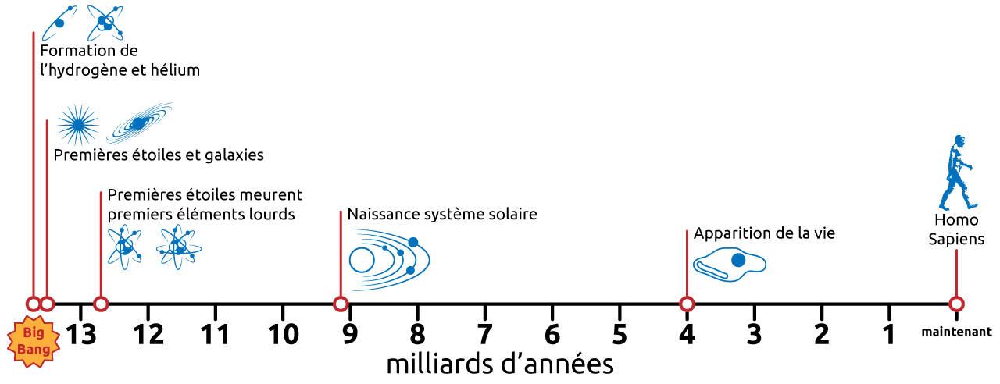
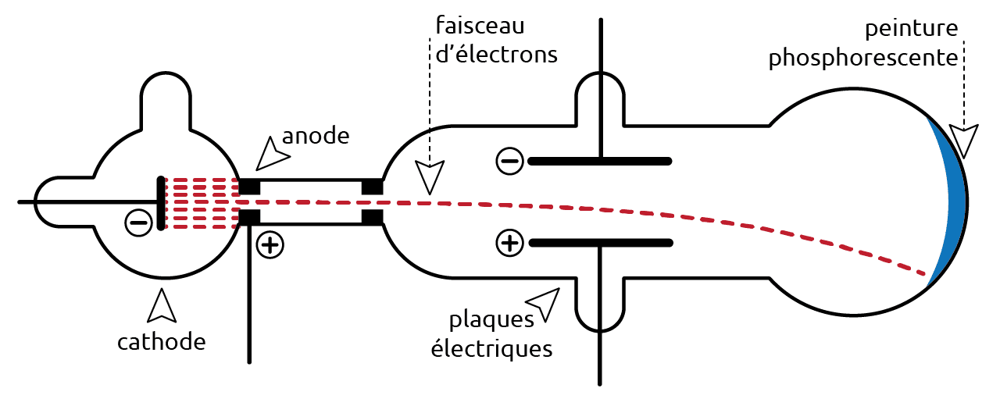
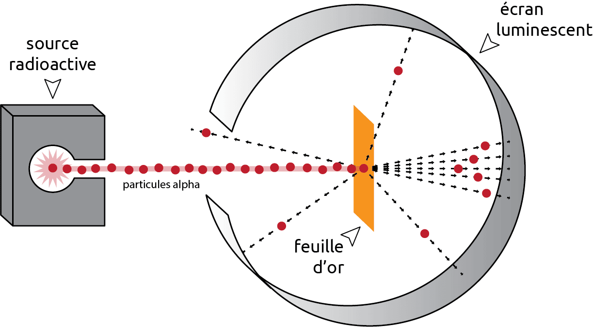
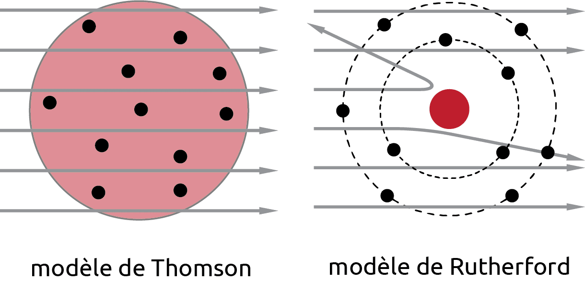
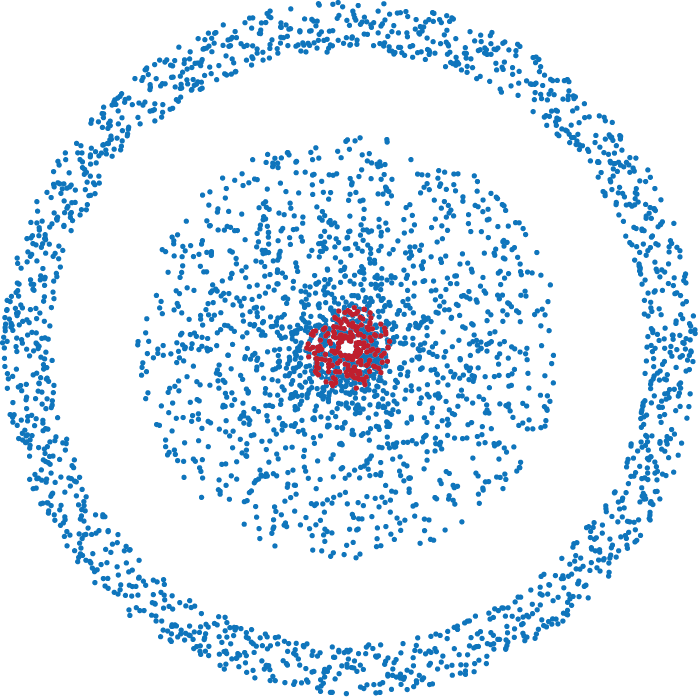
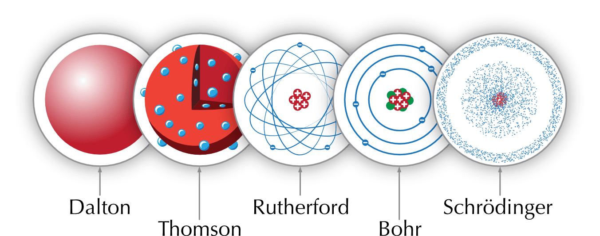
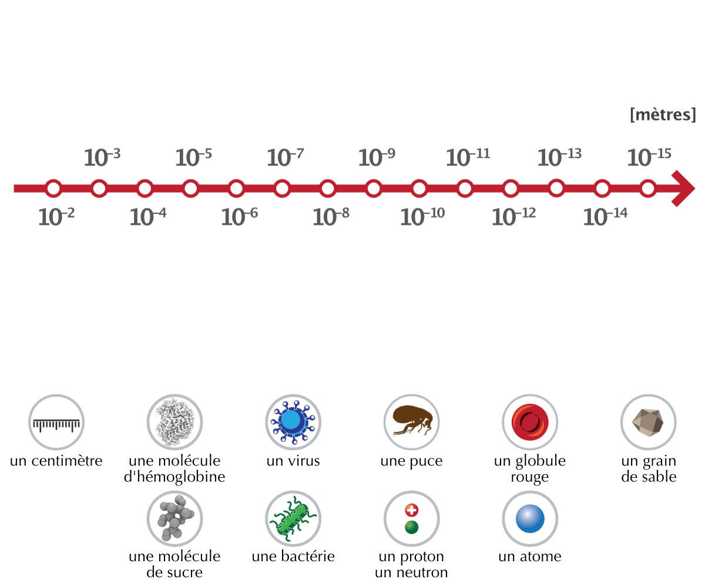

4 Historique
- Décrire les processus par lesquels les éléments chimiques ont été créés.
- Décrire les expériences clés qui ont conduit à la découverte du modèle atomique.
Selon le modèle du Big Bang, l’Univers est né il y a environ 14 milliards d’années lors d’une explosion cataclysmique. Cette explosion marque le début de l’espace, du temps, de la matière et de l’expansion de l’Univers. Quelques milliardièmes de seconde après le Big Bang, l’univers était constitué d’une sorte de soupe primordiale extrêmement chaude et dense des particules les plus fondamentales. L’univers se refroidit sous la barre des 1013 degrés et ces particules fondamentales commencent à s’assembler pour former protons et neutrons. Entre une et trois secondes après le Big Bang apparaît l’époque de la nucléosynthèse primordiale qui va durer environ 3 minutes. C’est à ce moment que se produit la formation de noyaux atomiques à partir des protons et neutrons qui étaient jusque-là libres.
4.1 Les origines de la matière
Le processus par lequel des éléments chimiques sont créés est appelé nucléosynthèse. On distingue plusieurs types de nucléosynthèses:
la nucléosynthèse primordiale
Le Big Bang a créé toute la matière et l’énergie de l’Univers. L’hydrogène et l’hélium sont créés dans les instants qui suivent le Big Bang.la nucléosynthèse stellaire
De petites étoiles fusionnent l’hydrogène en hélium, puis fusionnent l’hélium en carbone et en azote. Dans le coeur de plus grandes étoiles les éléments plus lourds sont formés comme le calcium, l’oxygène, le silicium, le soufre ou le fer.la nucléosynthèse explosive
L’explosion de supernovas crée et disperse un grand nombre d’éléments plus lourds que le fer. Lors de ces explosions la matière est dispersée dans l’univers.la nucléosynthèse interstellaire
La matière créée lors du Big Bang ou dans les étoiles est bombardée en permanence par les rayons cosmiques. Ce bombardement mène à des réactions de fission nucléaire qui créent à nouveau des éléments plus légers comme le lithium, le bore et ou béryllium.

On distingue quatre types de nucléosynthèse. Indiquez, pour chacun des éléments (ou groupes d’éléments) suivants, le type de nucléosynthèse qui en est principalement responsable.
- l’hydrogène et l’hélium
- le carbone et l’azote, produits par de petites étoiles
- le fer, le silicium et le soufre, produits au coeur des grandes étoiles
- les éléments plus lourds que le fer (or, uranium, …)
- le lithium, le béryllium et le bore
- nucléosynthèse primordiale (dans les instants qui suivent le Big Bang)
- nucléosynthèse stellaire (petites étoiles)
- nucléosynthèse stellaire (grandes étoiles)
- nucléosynthèse explosive (explosion de supernovas)
- nucléosynthèse interstellaire (bombardement par les rayons cosmiques)
Répondez aux questions suivantes à propos de l’origine des éléments.
- Quels sont les deux premiers éléments à avoir été formés dans l’Univers, et lors de quel événement ?
- Un atome de fer présent dans votre sang a-t-il pu être créé lors du Big Bang ? Sinon, où a-t-il été formé ?
- La nucléosynthèse interstellaire produit des éléments légers par un processus différent de la fusion. Lequel, et quelle en est la cause ?
- L’hydrogène et l’hélium, formés lors de la nucléosynthèse primordiale, dans les instants qui ont suivi le Big Bang.
- Non : le Big Bang (nucléosynthèse primordiale) n’a produit que l’hydrogène et l’hélium. Le fer est plus lourd ; il a été formé par nucléosynthèse stellaire, au coeur des grandes étoiles.
- La fission nucléaire : les rayons cosmiques bombardent en permanence la matière et brisent des noyaux, ce qui recrée des éléments plus légers comme le lithium, le béryllium et le bore.
4.2 Le modèle atomique
Autour du 5 siècle avant JC, le philosophe grec Démocrite est le premier à décrire le concept d’atome (atomos signifie indivisible en grec). Pour Démocrite, l’atome est éternel, constant, invisible et indivisible. Il est la plus petite unité et le bloc de construction de toute matière.
Les philosophes Platon et Aristote s’opposèrent fortement à l’idée de Démocrite, affirmant que la matière avait une structure continue que l’on pouvait diviser à l’infini. Il faudra attendre près de 2000 ans pour que la science puisse prouver que Démocrite avait raison!
Au début du 19e siècle, John Dalton (1766-1844) développe ce qui est maintenant considéré comme le fondement de la théorie atomique moderne. Dalton base sa théorie sur 5 hypothèses:
- La matière est faite de très petites particules appelées atomes qui ne peuvent pas être subdivisés ou détruits.
- Tous les atomes d’un même élément sont identiques.
- Les atomes d’éléments différents ont des masses différentes.
- Les atomes peuvent se combiner entre eux pour former des composés.
- Une réaction chimique est une modification de l’arrangement d’un groupe d’atomes.
En 1897, le physicien britannique Joseph John Thomson (1856-1940) découvre l’électron, une très petite particule chargée négativement. L’expérience menée par Thomson l’a conduit à la conclusion que l’électron est une particule constituante de l’atome. Comme les atomes sont électriquement neutres, de la matière chargée positivement doit exister. Thomson propose un nouveau modèle de l’atome. Il est constitué d’une masse de matière de charge positive avec des électrons de charge négative coincés dedans. Ce modèle est appelé le modèle pain de raisin (plum pudding).

En 1911, le physicien britannique Ernest Rutherford (1871-1937) fait une découverte importante. Il bombarde une feuille d’or extrêmement fine avec des particules alpha. Les particules alpha sont des particules radioactives chargées positivement.

Selon le modèle de Thomson, toutes les particules alpha devaient passer à travers la feuille d’or sans entrave. Cette hypothèse reposait sur l’idée que les électrons, chargé négativement, étaient suffisamment nombreux et répartis de manière égale dans l’atome pour neutraliser la charge positive. Ainsi, la collision des particules alpha avec les électrons aurait dû être minime, et la trajectoire des particules aurait été relativement droite à travers la feuille d’or.
La plupart des particules ont effectivement passé à travers la feuille, mais certaines rebondissaient comme si elles avaient frappé un objet massif positif. Rutherford conclu que la charge positive et la plupart de la masse de l’atome sont concentrées dans un très petit volume: le noyau. Rutherford a proposé un nouveau modèle de l’atome appelé modèle planétaire, avec un noyau au centre et des électrons gravitant autour du noyau comme les planètes autour du soleil.

En 1913, le physicien danois Niels Henrik David Bohr (1885-1962), propose un nouveau modèle de l’atome. Selon ce modèle, les électrons peuvent se déplacer sur des orbites à une distance spécifique du noyau, car l’énergie qu’ils possèdent n’est pas continue mais quantifiée.
En 1932, le physicien James Chadwick (1891-1974) découvre la troisième particule subatomique, le neutron. Un neutron a une masse très proche de celle du proton mais il n’a pas de charge électrique.
Deux même charges se repoussent mutuellement. Donc, si tous les protons dans le noyau se repoussent, pourquoi le noyau n’éclate-t-il pas tout simplement? C’est la force nucléaire. La force nucléaire est une force qui s’exerce entre protons et neutrons. Les neutrons stabilisent le noyau car ils ajoutent de l’attraction nucléaire sans provoquer de répulsion électrique.

Le modèle du nuage électronique a été développé en 1925 par Erwin Schrödinger (1887-1961) et Werner Heisenberg (1901-1976). Le nuage électronique représente la probabilité de trouver un électron dans une région de l’espace autour du noyau. Le nuage est plus dense aux endroits où la probabilité de trouver un électron est plus élevée.
La notion de probabilité a été introduite car on ne peut pas connaître préciséement et simultanément la position et la vitesse d’un électron. Le principe d’incertitude d’Heisenberg énonce que plus nous cherchons à préciser la position d’une particule, moins nous pouvons connaître avec précision sa quantité de mouvement, et inversement.

On peut faire une analogie entre le nuage électronique et l’hélice d’un avion. Quand le moteur de l’avion est arrêté, on peut voir les pales de l’hélice. Quand le moteur est allumé, les pales de l’hélices se déplacent si rapidement qu’on ne voit qu’une trace circulaire. Vous savez que les pales se trouvent quelque part dans la trace, mais à un instant donné, vous ne pouvez pas connaître précisément la position d’une pale.
Chaque modèle a ses mérites mais un modèle est, au mieux, une solution temporaire. Les modèles sont des sujets de recherche et changent avec le temps. Parfois, les anciens modèles sont mis de côté, mais ils conservent leur pouvoir explicatif et restent utiles.
Développé au début des années 1970, le modèle standard est le modèle actuellement accepté. Il a permis d’expliquer avec succès presque tous les résultats expérimentaux et de prédire avec précision une grande variété de phénomènes.
Dans le cadre de ce cours, nous utiliseront le modèle de Bohr. Ce modèle nous permettra de décrire les différents sujets et phénomènes auxquels nous seront confrontés.
Associez chaque savant à sa contribution à l’élaboration du modèle atomique.
Savants : Démocrite, John Dalton, Joseph John Thomson, Ernest Rutherford, Niels Bohr, James Chadwick.
- Découvre l’électron et propose le modèle du « pain de raisin ».
- Décrit le premier le concept d’atome, particule indivisible.
- Découvre le neutron.
- Propose que les électrons se déplacent sur des orbites d’énergie quantifiée.
- Formule la première théorie atomique moderne fondée sur cinq hypothèses.
- Découvre le noyau grâce au bombardement d’une feuille d’or.
- Joseph John Thomson
- Démocrite
- James Chadwick
- Niels Bohr
- John Dalton
- Ernest Rutherford
L’expérience de Rutherford consiste à bombarder une très fine feuille d’or avec des particules alpha (chargées positivement).
- D’après le modèle de Thomson, comment devaient se comporter toutes les particules alpha en traversant la feuille ? Pourquoi ?
- Qu’a-t-on réellement observé pour une petite partie des particules ?
- Quelle conclusion Rutherford en a-t-il tirée sur la structure de l’atome ?
- Elles devaient toutes traverser la feuille sans être déviées : dans le modèle de Thomson, la charge positive et les électrons sont répartis uniformément dans l’atome, la charge positive est donc « diluée » et ne peut pas dévier fortement les particules alpha.
- Une petite partie des particules a été fortement déviée, certaines rebondissant même en arrière, comme si elles avaient heurté un objet massif chargé positivement.
- La charge positive et la quasi-totalité de la masse de l’atome sont concentrées dans un très petit volume central : le noyau. L’atome est donc essentiellement constitué de vide, avec les électrons gravitant autour du noyau (modèle planétaire).
4.3 Échelle des tailles
La taille d’un atome est difficile à mesurer car les atomes n’ont pas une limite extérieure bien définie. Cependant, on sait que leur taille est d’environ 0.1 nm jusqu’à 0.215 nm pour les plus gros. Les longueurs d’onde de la lumière visible à l’oeil humain se situent entre 400 nm à 700 nm, ce qui est trop grand pour pouvoir voir les atomes avec un procédé utilisant la lumière visible.

Voir les atomes nécessite une variété d’instruments de pointe qui utilisent différents types de particules ou de rayonnements. Les rayons X, les neutrons et les électrons fournissent des informations complémentaires. Ces techniques permettent de se représenter de manière indirecte ce à quoi peut ressembler un atome.
4.4 Résumé
- Le processus de création des éléments chimiques s’appelle la nucléosynthèse. On en distingue quatre types : primordiale, stellaire, explosive et interstellaire.
- Le concept d’atome, particule indivisible, remonte à Démocrite durant l’Antiquité.
- Dalton formule la première théorie atomique moderne : des atomes indivisibles, identiques pour un même élément, qui se combinent pour former des composés.
- Thomson découvre l’électron (1897) et propose le modèle du « pain de raisin » ; l’atome n’est donc pas indivisible.
- Rutherford (1911), par le bombardement d’une feuille d’or, découvre le noyau : la charge positive et l’essentiel de la masse y sont concentrés, et l’atome est surtout constitué de vide.
- Bohr (1913) propose des électrons circulant sur des orbites d’énergie quantifiée.
- Chadwick (1932) découvre le neutron, neutre, qui stabilise le noyau grâce à la force nucléaire.
- Le modèle du nuage électronique (Schrödinger, Heisenberg) décrit la probabilité de présence de l’électron.
- Un atome mesure environ 0.1 à 0.215 nm, trop petit pour être observé en lumière visible (400 à 700 nm).
- Les modèles scientifiques sont temporaires et évoluent, mais conservent souvent un pouvoir explicatif utile.
4.5 Exercices supplémentaires
Voici, dans le désordre, cinq modèles ou découvertes qui ont marqué l’histoire de l’atome :
- modèle planétaire (noyau central)
- modèle du « pain de raisin »
- atome indivisible (concept philosophique)
- modèle du nuage électronique
- orbites d’énergie quantifiée
- Classez ces cinq propositions dans l’ordre chronologique.
- Pour chacune, citez le(s) savant(s) associé(s).
- Le modèle du « pain de raisin » a été abandonné au profit du modèle planétaire. Quelle observation expérimentale a rendu cet abandon nécessaire ?
- Les anciens modèles sont-ils totalement inutiles une fois remplacés ? Justifiez.
- Ordre chronologique :
- atome indivisible (concept philosophique)
- modèle du « pain de raisin »
- modèle planétaire (noyau central)
- orbites d’énergie quantifiée
- modèle du nuage électronique
- Savants associés :
- Démocrite (≈ 5e siècle av. J.-C.)
- Thomson (1897)
- Rutherford (1911)
- Bohr (1913)
- Schrödinger et Heisenberg (1925)
- La déviation, et le rebond en arrière, d’une petite partie des particules alpha lors du bombardement de la feuille d’or : ce comportement est impossible à expliquer avec une charge positive diluée ; il révèle un noyau concentré.
- Non : même remplacé, un modèle conserve son pouvoir explicatif et reste utile pour décrire certains phénomènes. C’est pour cette raison que ce cours utilise encore le modèle de Bohr.
Après la découverte du noyau, une difficulté apparaît : le noyau contient plusieurs protons, chargés positivement, très proches les uns des autres.
- Deux charges de même signe s’attirent-elles ou se repoussent-elles ? Qu’est-ce que cela devrait provoquer pour un noyau contenant plusieurs protons ?
- Quelle particule, découverte en 1932 et par qui, ne porte aucune charge électrique ?
- À l’aide de la notion de force nucléaire, expliquez comment les neutrons contribuent à la stabilité du noyau.
- Les particules alpha de Rutherford étant chargées positivement, expliquez pourquoi cette expérience ne pouvait pas, à elle seule, mettre en évidence le neutron.
- Deux charges de même signe se repoussent. Les protons du noyau se repoussent donc mutuellement, ce qui devrait faire « éclater » le noyau.
- Le neutron, découvert par James Chadwick.
- La force nucléaire s’exerce entre les protons et les neutrons. Les neutrons ajoutent de l’attraction nucléaire sans ajouter de répulsion électrique, puisqu’ils sont neutres : ils compensent la répulsion entre protons et stabilisent ainsi le noyau.
- L’expérience repose sur la déviation des particules alpha par la charge positive du noyau. Le neutron étant neutre, il n’exerce pas ce type d’interaction électrique sur les particules alpha : il ne pouvait donc pas être détecté par cette expérience.
Pour chacun des éléments suivants, indiquez le type de nucléosynthèse qui l’a principalement produit, puis répondez aux questions.
- l’hélium d’un ballon gonflable
- le carbone d’une mine de crayon
- l’or d’une bague
- Pourquoi l’hydrogène est-il l’élément le plus abondant de l’Univers ?
- Pourquoi les éléments plus lourds que le fer sont-ils relativement rares ?
- Hélium : nucléosynthèse primordiale (formé juste après le Big Bang ; il est aussi produit par fusion de l’hydrogène dans les étoiles).
- Carbone : nucléosynthèse stellaire (fusion de l’hélium au coeur des étoiles).
- Or : nucléosynthèse explosive ; l’or est plus lourd que le fer, il est produit lors de l’explosion des supernovas.
- L’hydrogène est le premier élément formé, lors de la nucléosynthèse primordiale, à partir des protons libres. C’est l’élément le plus simple et le plus ancien, produit en très grande quantité juste après le Big Bang.
- Les éléments plus lourds que le fer ne se forment pas par la fusion ordinaire des étoiles ; ils nécessitent des événements rares et violents, les explosions de supernovas (nucléosynthèse explosive). Ils sont donc produits en bien plus faible quantité.
Indiquez si chacune des affirmations suivantes est vraie ou fausse, puis justifiez votre réponse.
- Tous les éléments chimiques ont été créés lors du Big Bang.
- Selon Dalton, l’atome pouvait être divisé en particules plus petites.
- La découverte de l’électron par Thomson a montré que l’atome n’était pas indivisible.
- Le principe d’incertitude d’Heisenberg permet de connaître simultanément et précisément la position et la vitesse d’un électron.
- Un modèle scientifique est définitif et ne change jamais.
- Faux. Le Big Bang (nucléosynthèse primordiale) n’a créé que l’hydrogène et l’hélium. Les autres éléments ont été formés plus tard, par les nucléosynthèses stellaire, explosive et interstellaire.
- Faux. Pour Dalton, l’atome était une particule qui ne pouvait être ni subdivisée ni détruite.
- Vrai. L’électron est une particule constituante de l’atome ; l’atome contient donc des particules plus petites et n’est pas indivisible, contrairement à l’idée de Démocrite et de Dalton.
- Faux. Le principe d’incertitude énonce au contraire que plus on cherche à préciser la position d’une particule, moins on peut connaître précisément sa quantité de mouvement (et inversement) : on ne peut pas connaître les deux simultanément avec précision.
- Faux. Un modèle est une solution temporaire, sujet de recherche qui évolue avec le temps ; un ancien modèle peut être remplacé tout en conservant un pouvoir explicatif utile.